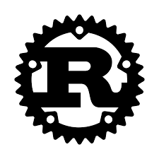
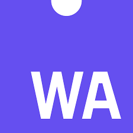
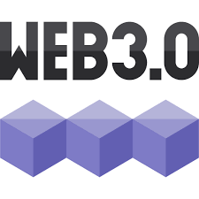
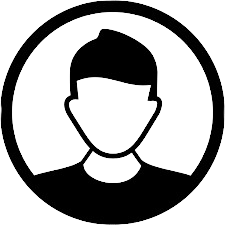
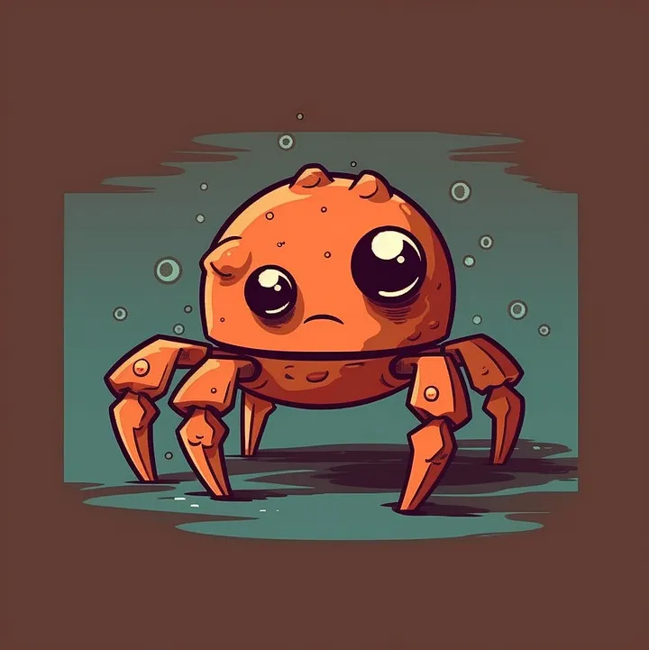

Belajar dengan SINAU

Telah meloloskan lebih dari 100.000 siswa yang tersebar di seluruh dunia.
Program unggulan

Rust
Rust merupakan bahasa pemrograman yang fokus pada keamanan dan kecepatan

Web Assembly
Web Assembly adalah teknologi yang memungkinkan bahasa pemrograman lainnya untuk berjalan di web

Web 3.0
Web 3.0 adalah konsep web yang memungkinkan pengguna untuk memiliki kontrol penuh atas data mereka sendiri
Kata Alumni terkait SINAU

"Dengan SINAU, saya dapat belajar banyak hal baru yang tidak saya
dapatkan di kampus saya. Saya sangat merekomendasikan SINAU untuk
teman-teman saya. Di SINAU, saya dapat belajar dengan cara yang
lebih menyenangkan dan lebih efektif."
John Doe - Blockhain Developer at Microhard
Jane Doe - UI/UX Designer di Petronas
John Smith - BI Analyst di Tesla
Berita Terbaru

Rust merupakan bahasa pemrograman yang fokus pada keamanan dan
kecepatan. Namun, apakah Rust sangat sepadan untuk dipelajari? Rust pada dasarnya adalah bahasa pemrograman yang sangat kuat dan sangat aman. Rust juga sangat cepat dan sangat efisien. Rust juga sangat cocok untuk pengembangan sistem operasi, game, dan aplikasi web. Rust juga sangat cocok untuk pengembangan sistem operasi, game, dan aplikasi web.